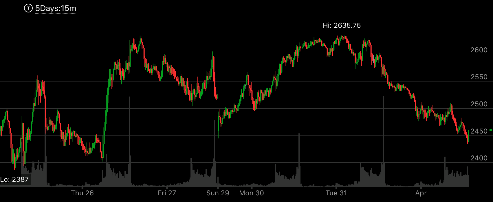

多重相对弱势

图示：图一，创走势新高后，拉回，再次冲高。创新高后，2：00，走平。这个就是相对弱势。 然后它下跌后，再次冲高，在8：00快速下跌后，拉回，创走势新高。然后走平。这样再次出现了相对弱势。 这个可以看成，它在5：10下跌后，反转，可以看到它是尖锐的。所以其实不是一个底部。而它上涨很快，走平。说明是一个上涨的完成走势。 那么结束后，未来一定会低于2575这个点。 图二则是它的15分钟点。